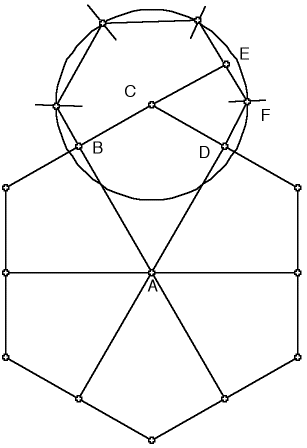
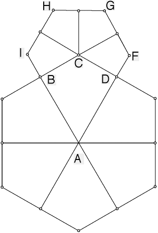

| Next, with C as center, draw the circle through F.
Starting with F as center, mark arcs on this circle using radius CF. |
|  |
|
| Connect the arcs with line segments, connecting the
last arc to B. Draw segments from C to the midpoints of these segments. Erase the arcs. |
|  |
|